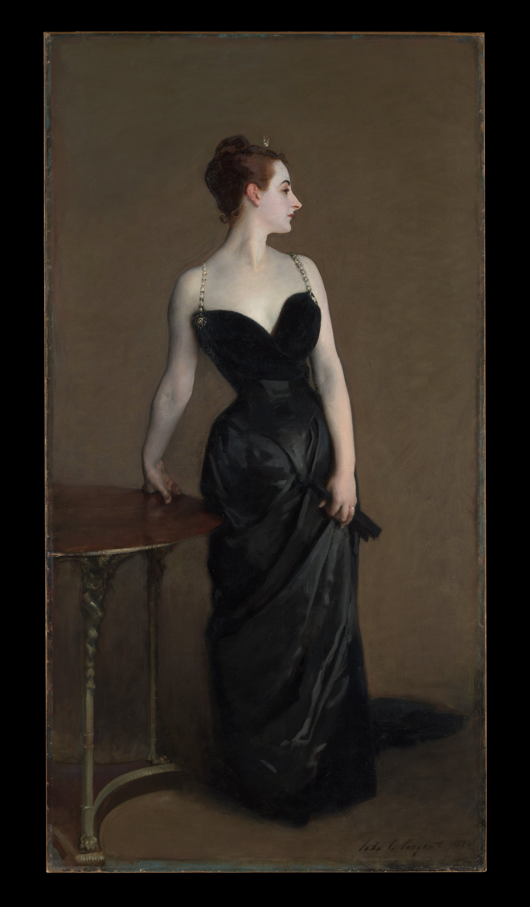

黑缎、冷肤色，以及一次拒绝对视的公开露面。
脸向右、躯干向前、左臂斜落。右侧空墙放走视线，左下小桌压住重心。
暖烟褐托住冷象牙肤色；黑裙以蓝灰、炭黑、暖褐的明度变化显出缎面。
眼神退出，肩颈成为最大亮区。背景压暗，几道冷灰反光就让裙身恢复体积。
脸与轮廓收紧，裙摆、桌面和背景溶开。缎面不靠描绘花纹，而靠几道长而湿的灰黑反光；皮肤则由粉、灰、蓝绿保持冷感。
事实：Sargent 主动争取为 Virginie Gautreau 作画。1884 年巴黎沙龙反响激烈后，他把原先滑落的一侧肩带重新画回肩上。
观点：她既被展示，
也在掌控这场展示。
礼服强调身体，侧脸拒绝取悦。被扶正的肩带看似恢复礼仪，却让我们永远意识到它曾经滑落。
Madame X (Virginie Amélie Avegno Gautreau)，John Singer Sargent，1883–84，布面油画；The Metropolitan Museum of Art，16.53。原图来自馆方开放接口，标记 Public Domain。图片版权归原作者及适用权利人；事实据馆方与 Tate，赏析及近似色值：每日艺术。转载或商用前请复核。